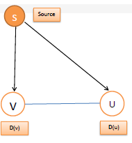

About Our Project
It is based on finding the single-source shortest path from a given source to every other location in the given Graph. We have used the famous "Dijkstra Algorithm" to implement this.
1. Create a graph. Manually or by using "New Graph button"
2. Click to visualize.
3. Full Visualization is shown of the path taken from source to destination.
This is mainly implemented to work in real-world. The cities and roads linking them, are respectively represented as nodes and edges.
About Dijkstra Algorithm
Dijkstra's algorithm (/ˈdaɪkstrəz/ DYKE-strəz) is an algorithm for finding the shortest paths between nodes in a graph, which may represent, for example, road networks. It was conceived by computer scientist Edsger W. Dijkstra in 1956. more
A modified version of Dijkstra Algorithm is currently being used in Google Maps.
An operation called "relaxing" the edges is used to solve this problem using Dijkstra.
In this, an edge is relaxed i.e.
if(d(u) > d(v) + c(v,u)
then, d(u) = d(v) + c(v,u)
whered(u) = distance between Source(S) and Node U directly
d(v) = distance between Source(S) and Node V directly
c(v,u) = cost from v to u (weights)

Algorithm
function Dijkstra(Graph, source):
vertex v in Graph:
dist[v] := infinity
previous[v] := undefined
dist[source] := 0
Q := the set of all nodes in Graph
while Q is not empty:
u := node in Q with smallest dist[ ]
remove u from Q
for each neighbor v of u:
alt := dist[u] + dist_between(u, v)
if alt dist[v]
dist[v] :=alt
previous[v] :=u
return previous[ ]